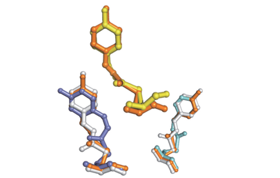
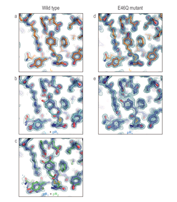
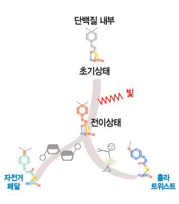

Report by Subjects
Report by Subjects
KAIST RESEARCH ACHIEVEMENTS
Visualization and Control of Reaction in Protein
(Department of Chemistry) Hyotcherl Ihee
Summary
One of the most important factors in drug development is to find a suitable candidate. Many drug candidates fail during a variety of clinical trials, and knowledge of the exact mechanism of the interaction between the drug and the target protein may help find the candidate that survives such clinical trials and successfully work in the target disease. The interaction of a drug molecule with the target disease can be considered a chemical reaction in vivo. Thus, it is important to investigate the mechanism of the chemical reaction including the three-dimensional structure of the transition state, which may assist designing a more optimized candidate.
R&D Report

It was identified that atoms proceed in two types of reaction pathways that minimize their movement due to interactions of different atoms within protein: the bicycle-pedal path in which the reaction is similar with working on a bicycle pedal; and the hula-twist path in which it is similar with hula dancing. In a subway with a few people, people tend to move in a straight line, but during commuting hours with crowds, people tend to move about here and there where there is empty space. Likewise, it was identified that the molecule undergoes a chemical reaction by using the space-efficient reaction path that minimizes the volume swept by its movement.
Mechanism of Photoisomerization Inside Protein
A lot of photoreceptor proteins convert external light stimuli into molecular action in virtue of isomerization of its n-conjugated chromophore. Typically a n-conjugated organic molecule is thought to isomerize via the one-bond-flip (OBF) mechanism within gas or solution phase (Fig. 1a). In an inner cavity of a photoreceptor, the chromophore may no longer proceed via OBF isomerization, because it would collide with the surrounding side chains of the protein via hydrogen-bonding interactions and steric constraints. In this restrictive condition, isomerization should occur through "volume-conserving" fashion. For instance, photoactive yellow protein (PYP) of Halorhodospira halophila has an interior chromophore (p-coumaric acid; pCA, Fig. 1b) that is known to be isomerized via one of the volume-conserved mechanisms, Bicycle-Pedal (BP) mechanism during photocycle (Fig. 1a). An alternative mechanism, Hula-Twist (HT) mechanism (Fig. 1a), has been observed in various systems, but not in PYP. Both volume-conserving mechanisms have been observed individually, but these highly-choreographed atomic motions have not been reported in a single system simultaneously until our study. Details of Photoisomerization revealed by time-resolved crystallography
 Fig 2. Time independent density maps and a photocycle consistent with intermediates.
We employed time-resolved Laue crystallographic method to investigate how the chromophore of PYP isomerizes and what structures are intermediate from 100 ps to 1 us. Time-dependent density maps depict a highly twisted structure in early time (less than ns) and nearby residue movement to sustain a hydrogen-bonding network (Fig. 2a). Subsequent kinetic analysis unveiled three time-independent density maps and two time constants, which suggest that the first map has a homogeneous structure (IT), but second and third maps have heterogeneous structures (ICT+pR1 and pR1+pR2, respectively)(Fig. 2b). Further structure refinement and kinetic analysis revealed four intermediate structures and bifurcated pathways in the early photocycle. In detail, first intermediate, IT, bifurcates into pR1 (via HT pathway) and ICT (via BP pathway) with time constants of 3 ns and 1.7 ns, respectively (ICT : pR1 ~ 6:4). ICT further decays into pR2 with a time constant of 20 ns (Fig. 2c). Additional experiments with E46Q mutant support that the hydrogen bond network between pCA and nearby residues plays a crucial role on bifurcate pathways (Fig. 2c). Deficiency of one hydrogen bond in E46Q mutant makes BP pathway unstable, hence only HT pathway exists in isomerization of E46Q mutant.
 Fig 3. Isomerization mechanisms and overview of PYP.
Expectation Effectiveness
Our results provide several insights into the volume-conserving isomerization in PYP photocycle structurally and kinetically. First, we unveiled a long -hypothesized, highly distorted intermediate along trans to cis isomerization pathway. This structure provides consistent and appropriate elucidations on previous experimental and theoretical results. Second, the detailed intermediate structures and its dynamics support that the hydrogen bonds inside protein play key roles in photo-isomerization reactions; stabilization of its intermediates and bifurcated pathway. This bifurcated volume-conserving pathway in a single system was found for the first time. Finally, we controlled the reaction pathway just by modifying one hydrogen bond. This study has potential applications not only to other photoactive protein systems but also to time-resolved experiments performed in next generation synchrotrons with femtosecond time-resolution. Results of this research paved the way to manipulate the transition state through observation of the chemical reaction transition, which is likely to be applied to different fields such as new drug development and medical treatment through the control of chemical reactions. Since diffraction data can be collected in an earlier time range using X-ray free electron laser (XFEL), that is, a next-generation light source, the structure of even earlier reaction species may be detected.
Research Funding
ㆍInstitute for Basic Science (Major project of Institute for Basic Science - Center for Nanomaterials and Chemical Reactions)
ㆍNational Research Foundation of Korea (Leading Researcher Program - Creative Research)
Research Results
ㆍY. O. Jung, J. H. Lee, J. Kim, M. Schmidt, K. Moffat, V. Srajer, H. Ihee*, Nature Chemistry, 5, 212-220(2013)